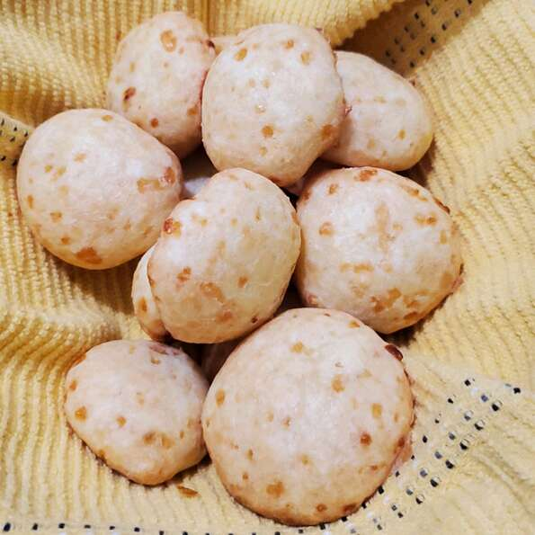

Pão De Queijo (Cheese Bread)

Description
Brazilian cheese bread is very easy to make, and features a chewy, cheesy, bready center, encased in a
beautiful,
thin, pastry crust.
It also happens to be gluten free, thanks to tapioca flour, which is also responsible for
the very unique texture. Happily, the ingredients are fairly inexpensive, which means you can play around with a
few batches and see for yourself.
ingredients
- 2¼ cups tapioca flour, or more as needed
- ⅔ cup milk
- ½ cup mild olive oil
- 1 teaspoon kosher salt
- 2 ounces freshly grated mozzarella cheese
- 2 ounces finely grated Parmigiano-Reggiano cheese
- 2 large eggs, beaten
- 1 pinch cayenne pepper
Steps
- Preheat the oven to 400 degrees F (200 degrees C).
- Place tapioca flour in a mixing bowl. Combine milk, olive oil, and salt in a pan. Bring to a simmer over
medium-high heat. Immediately remove from heat and pour into the bowl with the tapioca. Mix until a shaggy
dough starts to form. Let rest for 5 minutes.
- Add mozzarella and Parmesan cheeses, eggs, and cayenne. Stir with a fork until thoroughly combined. Use an
ice cream scoop to portion dough onto a silicone-lined baking sheet. Poke down any jagged bits using a wet
finger if desired.
- Bake in the preheated oven until puffed and golden, about 20 minutes. Let cool for 5 minutes and serve warm.